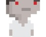
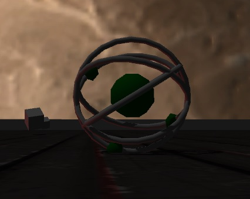
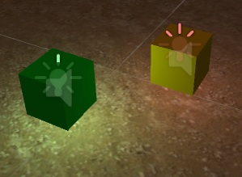

Games Projects
The following games have been created primarily in the Unity Engine. Utilising iterative, agile, development methods these projects were all created within short, strict, deadlines

Nightmare
Created using Stencyl as my first project for University in stage 1. The idea was to have a procedural, endless runner with a horror vibe alongside implementing Kongregate's high score AP

Marble
First Unity project, created a tech demo for a rolling ball game. Due to copyright music the game cannot be hosted online but can be shared as a showcase.

Duality
Currently in development, a two-player split screen shooting game using Unity3D. Player 1 using Keyboard controls, Player 2 using the Xbox 360 controller.